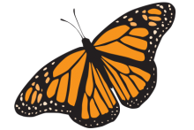
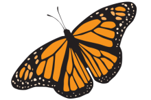

My name is Gustavo Castaneda, I'm a 16 year old Sophomore at CCPA. I have a little sister and brother that I enjoy taking care of. We all live with our mom and dad. I was born in Mexico, and migrated to the United States when I was eight years old.
 
